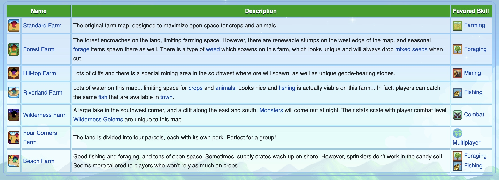

Getting Started
Character Creation
The character creation screen allows customization options, such as character Appearance, Gender, Name, Farm Name, Favorite Thing, and Animal Preference.
Farm Type
Prepping Your Farm
Preparing Your First Harvest
- Use your axe, pickaxe, and scythe on the logs, stones, grass, and bushes on your farm to clear about 15 tiles.
- Use your hoe to till the soil and plant the 15 Parsnip Seeds provided by Mayor Lewis. You obtain these on your first day on the floor inside your home.
- Use your watering can to water your seeds and soil.
- Continue watering your crops every day until they grow into harvestable crops. Your parsnips will be ready to harvest in 4 days.
Crops need to be watered daily to grow!
Energy
Energy limits productivity. One of the main ways to overcome this is by eating food. Most crops and many foraged items can be eaten to regain energy. Some foods can also subtract energy; hover the cursor over the food to see how much energy it gives/takes away.
Sleeping at the end of the day will restore the players' energy. After 12:00 AM, the player won't restore 100% of the energy. If the player is exhausted when they go to bed or forced to sleep at 2:00 AM, they'll wake up in the morning with their energy level about half restored.

Whether you're a seasoned farmer or new to the fields, discover the joy in Stardew Valley. Your adventure begins now!"